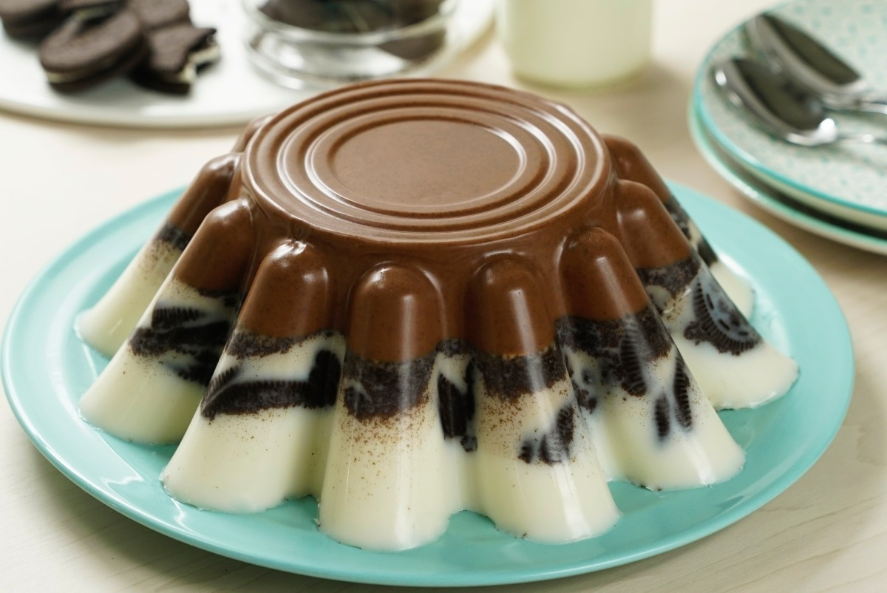
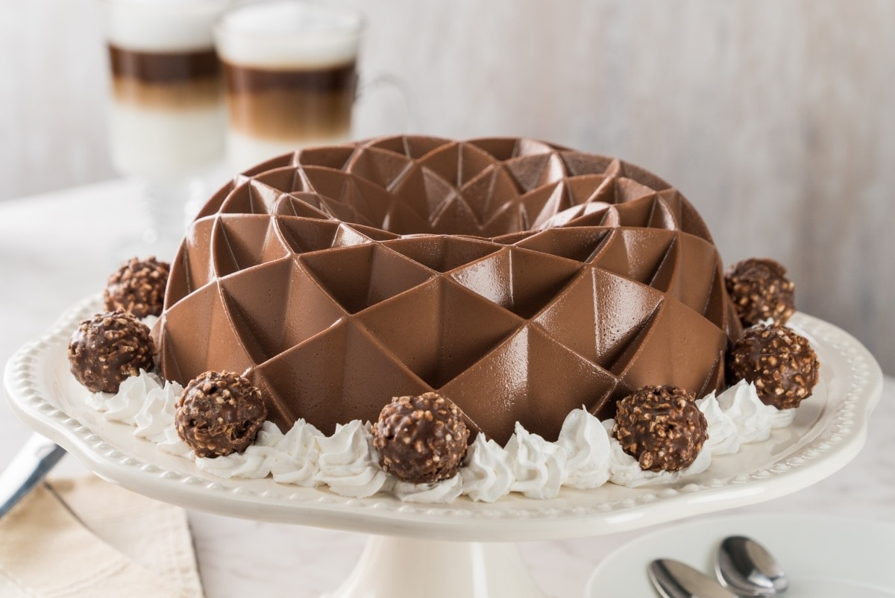

(pesos mx)
Lo mejor de todo, es que solamente necesitas licuar y listo. El postre ideal para compartir con tu familia.


| GELATINA | DESCRIPCIÓN | PRECIO (pesos mx) |
|
|---|---|---|---|
| FLOTATINA DE VAINILLA |
Es sumamente rica, muy cremosa por dentro y acidita por fuera. Lo mejor de todo, es que solamente necesitas licuar y listo. El postre ideal para compartir con tu familia. |
$ 255.00 | |
| GELATINA DE OREO CON CHOCOLATE | Gelatina con una deliciosa capa de gelatina de chocolate y una capa cremosita de gelatina de leche con galletas oreos, este postre te va a fascinar por su cremosidad y su doble sabor al que no te vas a poder resistir. | $ 350.00 |  |
| GELATINA MOSAICO INVERTIDA | Qué mejor postre que una gelatina colorida como esta Gelatina Mosaico con cubos de gelatina de yoghurt cremosito y un extra de gelatina cristalina de té verde. | $ 235.00 | |
| GELATINA DE FERRERO | Gelatina de Ferrero, un rico postre. Disfruta de esta deliciosa receta, con chocolate amargo y chocolate Ferrero con un sabor de avellana que te encantará. Para cocinar esta gelatina únicamente combina todos tus ingredientes y decora. | $ 550.00 |  |
| PAY DE GELATINA DE LIMÓN | ¡Es ideal para compartir! Prueba esta receta de pay con gelatina de limón, ya que la combinación de sabores es muy fresca gracias a la mezcla de Gelatina sabor Limón de D’Gari®, queso crema, y leche condensada. Por si fuera poco, las capas de Gelatina sabor Limón de D’Gari® contrastan a la perfección con una crujiente capa de galleta. | $ 250.00 | |